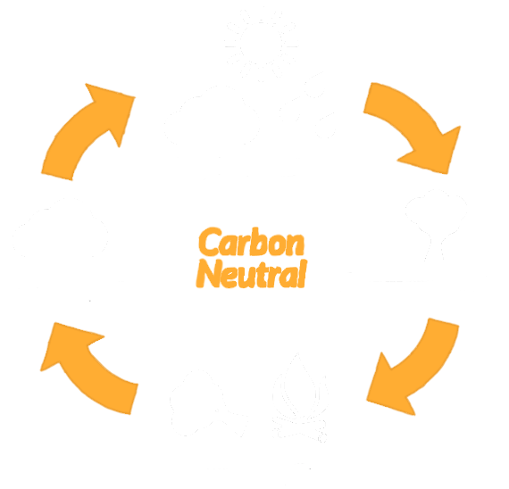

Why choose firewood?
Firewood is a renewable, carbon neutral, eco-friendly resource unlike coal and turf which are harmful fossil fuels. By burning firewood, you will achieve greater heat and produce less ash than similar products such as briquets which will soon no longer be available due to the closing of the bogs after mass habitat destruction and resource exhaustion. Firewood is also by far the most economically efficient source of fuel for an open fire or stove in the home.
What is carbon neutral?
Firewood is a carbon neutral fuel meaning that over the lifetime of the tree it absorbs huge amounts of CO2 from the atmosphere. This helps reverse the effects of global warming and climate change. When the tree is then harvested and burned only some of that CO2 is then released again, back into the atmosphere. Most importantly by burning timber you are not increasing the amount of CO2 in the atmosphere in the same way as with coal and turf which absorbs no CO2 in its lifetime but releases huge amounts during burning which greatly contributes to worsening global warming and climate change.
Sustainable
Firewood is a sustainable resource unlike coal and turf which will eventually run out with no way of regenerating supplies. In Ireland all forests must be sustainably managed by law. This means that any tree removed from the forest must be replaced and tree removal must be carried out in an environmentally friendly way and in a way that protects the natural wildlife and habitats in and around the forest. This policy is strictly enforced and very closely monitored. Unlike a lot of the world the area of forested land in Ireland is always increasing year on year. By contributing to this industry you are helping support this growth of Irish woodland and a cleaner, greener Ireland and helping to reverse climate change to protect future generations.
